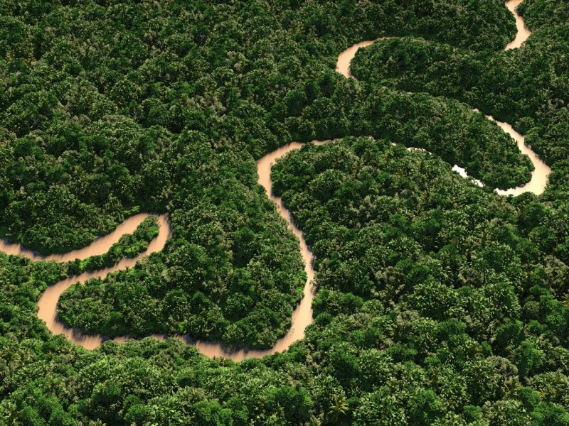

亞馬遜雨林
亞馬遜雨林（葡萄牙語：Amazônia、西班牙語：Amazonia），又稱亞馬遜河雨林，位於南美洲亞馬遜盆地的熱帶雨林，佔地僅存約500萬平方公里，使這片雨
林生機盎然的就是亞馬遜河。雨林橫越了8個國家：巴西（佔森林60%面積）、哥倫比亞、秘魯、委內瑞拉、厄瓜多、玻利維亞、圭亞那及蘇利南，包括法屬圭
亞那。其中4個國家將雨林所屬州份取名亞馬遜州。亞馬遜雨林佔世界雨林面積的一半，森林面積的21%，是全球最大及物種最多的熱帶雨林。
森林砍伐
近五分之一的亞馬遜雨林已經被破壞，餘下的部份依然面臨危機。在1990年至2000年短短10年間，亞馬遜雨林遭到破壞的面積由4,150萬公頃上升至5,870萬公
頃——相等於葡萄牙的2倍面積。主要原因是巴西農民為了經濟效益大規模砍伐雨林來種植大豆和油棕（產棕櫚油）。
在巴西，國家太空研究院每年公佈森林砍伐的數字。森林砍伐的數字是根據測地衛星Landsat於亞馬遜雨林旱季時拍攝的100至220幅相片估計而得出。估計數字
只考慮到損失了的亞馬遜雨林生物群系，沒有考慮到雨林中的天然草原或稀樹草原的損失。根據INPE指出，於巴西境內的亞馬遜雨林生物群系的原本面積為
4,100,000平方公里，於2005年減少至3,403,000平方公里——損失達17.1%。
保育
一些環境學家提出保育雨林不單只有生物學上的動機，亦有其經濟動機。若以可持續方式耕作水果、橡膠及木材，每1公頃的秘魯亞馬遜雨林價值約US$6820；
若以非持續性方式耕作商業木材，則值約US$1000；若將林地改作牧草場，則只值US$148，但這個假設被廣泛地質疑。 巴西空軍一直以來利用巴西航空工業公
司Embraer R-99監察機監測亞馬遜雨林，此為亞馬遜監控系統（SIVAM, Sistema de Vigilância da Amazônia）計劃的一部份。於2004年7月的一個會議上
，科學警告雨林將不能夠維持以往每年吸收百萬噸計的溫室氣體，原因是雨林遭破壞的速度正在加劇。單單於2003年，已有9,169平方英里的雨林被砍伐了。 單
單在巴西，超過90個原住民部族於1900年代被戰爭與疾病摧毀，數百年來累積對雨林物種醫學價值的知識亦除之散失。由於領土持續被森林砍伐破壞及生態滅
絕，例如於秘魯亞馬遜，本土的部族不斷地消失。